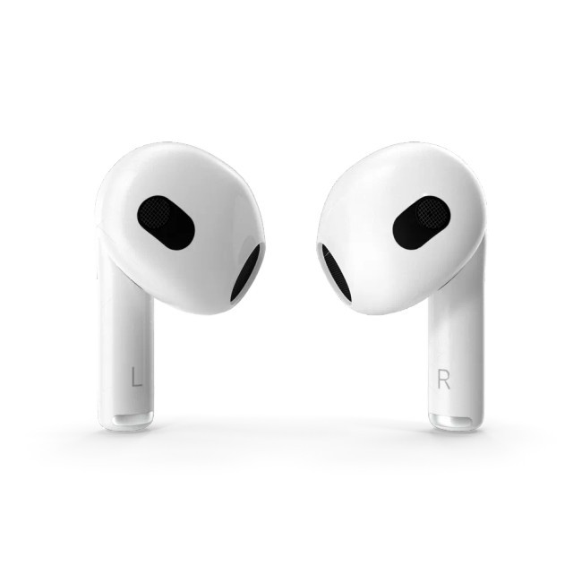

เฉลย · หูฟัง Apple AirPods สีขาว
airpods-holdout · ไม่ได้ยกสินค้า
“หยิบออกจากกล่องแล้วใส่ทีละข้างได้เลยค่ะ”
| วิธี | ภาพ | ภาพ + ข้อความ |
|---|---|---|
| choice | ✓ หูฟัง Apple AirPods สีขาวความมั่นใจ 92.0%ทายว่าไม่ได้ยก | ✓ หูฟัง Apple AirPods สีขาวความมั่นใจ 95.0%ทายว่าไม่ได้ยก |
| reference | ✓ หูฟัง Apple AirPods สีขาวความมั่นใจ 89.0%ทายว่าไม่ได้ยก | ✓ หูฟัง Apple AirPods สีขาวความมั่นใจ 90.0%ทายว่าไม่ได้ยก |